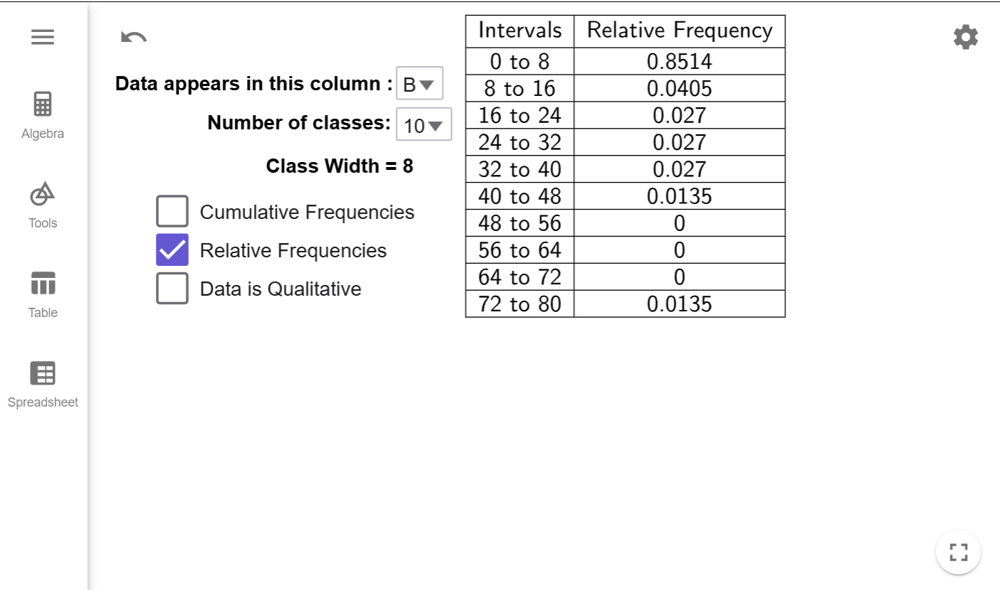

How to Create Frequency Distributions
Distributions hold significant theoretical importance in this course. In this section, we will learn about frequency distributions, which is the basis for many of the concepts in this course.
Basics of Frequency Distributions
What is Frequency?
The frequency of a data point is how many times it shows up in the data set.
What is a Frequency Distribution?
A frequency distribution is a table that lists either the raw data or classes (defined below) in the first column and corresponding frequency in the second column.
Before the advent of computers, frequency distributions were created manually. This involved arranging the data in ascending order and marking a tally for each occurrence of a data point. This process was prone to human errors such as miscounting or duplicating data.
With computers, creating frequency distributions is much faster and more accurate than manual methods. Tools like SPSS, MATLAB, and Excel offer advanced statistical capabilities. GeoGebra, however, is particularly useful in educational settings because of its simplicity and visualization tools, making it ideal for students learning this process.
Example 1
The data on the number of deaths directly caused by tornadoes in Tennessee is given in the table below.
Create a Frequency Distribution for the number of deaths per year.
| Year | Direct Fatalities | Year | Direct Fatalities | Year | Direct Fatalities | Year | Direct Fatalities |
|---|---|---|---|---|---|---|---|
| 2023 | 17 | 2004 | 0 | 1985 | 0 | 1966 | 0 |
| 2022 | 0 | 2003 | 12 | 1984 | 1 | 1965 | 1 |
| 2021 | 4 | 2002 | 17 | 1983 | 0 | 1964 | 0 |
| 2020 | 27 | 2001 | 3 | 1982 | 0 | 1963 | 4 |
| 2019 | 0 | 2000 | 1 | 1981 | 0 | 1962 | 0 |
| 2018 | 1 | 1999 | 12 | 1980 | 0 | 1961 | 0 |
| 2017 | 0 | 1998 | 7 | 1979 | 2 | 1960 | 0 |
| 2016 | 2 | 1997 | 1 | 1978 | 0 | 1959 | 0 |
| 2015 | 2 | 1996 | 0 | 1977 | 0 | 1958 | 0 |
| 2014 | 2 | 1995 | 3 | 1976 | 0 | 1957 | 0 |
| 2013 | 0 | 1994 | 5 | 1975 | 3 | 1956 | 3 |
| 2012 | 3 | 1993 | 1 | 1974 | 47 | 1955 | 0 |
| 2011 | 32 | 1992 | 1 | 1973 | 1 | 1954 | 0 |
| 2010 | 1 | 1991 | 5 | 1972 | 0 | 1953 | 4 |
| 2009 | 2 | 1990 | 0 | 1971 | 3 | 1952 | 75 |
| 2008 | 31 | 1989 | 1 | 1970 | 3 | 1951 | 0 |
| 2007 | 0 | 1988 | 6 | 1969 | 0 | 1950 | 9 |
| 2006 | 34 | 1987 | 0 | 1968 | 4 |
Solution
First, click on the copy data to clipboard button and a popup should appear that indicates the copy was
successful.
Next, open the Frequency Distribution Tool by clicking on this link or by going to the GeoGebra Tools module and clicking the
link provided there. Once Frequency Distribution Tool is opened, click on the Spreadsheet
tab.
Click on the A1 Cell, and right click to open up the Context Menu.
Select Paste
from the Menu, and the data will copy into the spreadsheet. (This may take a moment to load.
Please be patient.)
Notice that the data in which we are interested is in column B. Remember
this! Click on the Spreadsheet tab to hide the data.
Notice that the tool is set by default to column A. If we click on the dropdown box and select column B, we will get the correct frequency distribution.
Interpretation
The numbers in the Data column represents the number of deaths reported. The numbers in the Frequency column represent the number of years from 1950 to 2023 that reported that many deaths. For example, 10 years between 1950 and 2023 reported 10 deaths caused by Tornadoes in Tennessee.
While Example 1 works well for small data sets, many frequency distributions group data into ranges instead of listing each unique data point individually. For example, we could group the number of years with 0 to 4 deaths, 5 to 9 deaths, 10 to 14 deaths, and so on, creating a row in the table for each of these ranges. These ranges are called classes or bins in statistics.
If we created a new class for every 5 deaths, we would need 16 classes to cover all the data, from the class with 0 to 4 deaths up to the class with 75 to 79 deaths. However, this approach would lead to many classes with a frequency of 0, which makes the table less meaningful. To avoid this, we want the ranges to be large enough to capture meaningful data but not so small that most classes are empty.
So how many classes should we have? As the researcher, you get to decide, but a good rule of thumb is to aim for 5 to 20 classes. Once the number of classes is chosen, the formula below will help determine the range for each class, known as the class width.
How do you calculate class width?
The class width is the size of each class and determines how data is grouped. It is calculated using the formula \[ \text{class width } = \dfrac{\text{largest value } - \text{smallest value }}{\text{number of classes}}.\]
If the result is a decimal, always round up to the next whole number to ensure all data points fit into the intervals. For example, if the calculated width is 9.38, round it up to 10. This ensures every data point fits into one of the classes without gaps.
If the largest data point ends up being the exact right endpoint of the last class, we add 1 to the class width calculation to ensure all data points fit within the classes. Our tool automatically checks for this case and you don't have to worry about it.
What does this number mean?
The class width measures the difference between the smallest numbers in successive classes. For example, if our first class is from 0 to 4 deaths and our second class is from 5 to 9 deaths, then the class width is 5 since \(5-0=5\).
Class widths, along with the minimum value of the data set, define what is known as boundary points. Boundary points define where one class ends and another class begins.
How do I compute the Boundary Points?
The minimum value is the first boundary point. To find the other boundary points, keep adding the class width until you get a value that is larger than (but not equal to) the maximal value in our data set.
For example, if we wanted a class width of 5 for the classes of tornado deaths, the boundary points are 0, 5, 10, 15, 20, \(\ldots\), 70, 75, 80.
Example 2
Using our data from Example 1, create a frequency distribution with 8 different classes.
Solution
The data from Example 1 should already be loaded into GeoGebra. If it is not, follow the steps at the beginning of Example 1 to load the data in and selected option B from the dropbox. Your tool should like this:
The first thing we are going to do is uncheck the Data is Qualitative checkbox, which reveals the Number of classes option. Notice that the tool automatically computes the class width and updates Frequency Distribution to classes (which it calls intervals) instead of raw data.
Since we want 8 classes, change the dropbox to 8 and everything will update automatically.
Interpretation
The intervals column gives the range of values for each class, always including the first number in the range and excluding the last number in the range. For example, the interval 0 to 10 means all the range of values start at 0 and include all the numbers up to but not including 10. The Frequency, as before, tells us the number of years whose number of deaths fell into that range of values. For example, there were 64 years that had between 0 and 10 deaths.
Relative Frequency
An important concept related to frequency is relative frequency, and it is a foundational concept for several key topics in this course. We will use relative frequencies when discussing cumulative frequencies (discussed below), creating histograms, studying probability and probability distributions, and using statistical inference to discuss population proportions. By connecting data analysis to probability theory and statistical inference, relative frequency serves as a bridge between descriptive and inferential methods in a statistics course.
What is Relative Frequency?
Relative Frequency has two interpretations.
- For raw data, relative frequency is the percentage of times that a particular value appears in a data set.
- For data sorted into classes, relative frequency is the percentage of data that appear in a given class.
In both cases, the formula for relative frequency is identical: \[\text{relative frequency }=\dfrac{\text{frequency}}{n},\] where \(n\) is the number of data points in the sample. Notice that this will always give a percentage as a decimal, so we will always write \(0.3947\) instead of \(39.47\)% in this course. Using percentages instead of decimals can cause errors in many of the formulas because most statistical formulas use relative frequencies rather than percentages to ensure accurate calculations.
⚠️ Warning ⚠️
Relative frequencies will always yield a number between 0 and 1. If you get a number larger than 1 or a negative number, double check your work because you made a calculation error!
What is a Relative Frequency Distribution?
A relative frequency distribution is a table that lists either the raw data or classes in the first column and the corresponding relative frequencies in the second column.
How do I Compute a Relative Frequency?
Let's consider our Frequency Distribution from Example 2:
To determine the number of data points, we sum the Frequency column:
\[64+4+1+3+1+0+0+1=73.\] Next, we choose a class, such as the interval 0 to 10, and note its frequency,
which is 64. The relative frequency is found by dividing the class frequency by the total:
\[\dfrac{64}{73}\approx 0.8767.\] Thus, \(0.8767\) is the relative frequency for 0 to 10, meaning
\(87.67\%\) of the years from 1950 to 2023 had 0 to 10 deaths (excluding 10). Note we will always
round relative frequency to four decimal places, which is a standard practice in statistics.
While it is essential to know how to compute a relative frequency, performing multiple manual calculations to create a relative frequency distribution increases the risk of calculation errors. In our next example, we will see how to use our GeoGebra tool to create a relative frequency distribution.
Example 3
For the data from Example 1, create a relative frequency distribution with 10 classes.
Solution
The data from Example 1 should already be loaded into GeoGebra. If it is not, follow the steps at the beginning of Example 1 to load the data in and selected option B from the dropbox. You should also deselected the Data is Qualitative checkbox.
If you are continuing from Example 2, your tool should like this:
The first thing we are going to do is check the Relative Frequencies checkbox,
which changes the Frequency column to a Relative Frequency Column. We then set the number of classes
to 10, and this is the result:

Interpretation
The intervals column gives the range of values for each class, always including the first number in the range and excluding the last number in the range. For example, the interval 0 to 10 means all the range of values start at 0 and include all the numbers up to but not including 10. The Relative Frequency column tells us the percentage of years in which the number of deaths fell into that range of values. For example, 85.14% of the years whose total number of deaths were between 0 and 10.
Cumulative Frequency
Another important concept related to frequency is cumulative frequency, which keeps a running total of frequencies up to a specific value or class. This provides insight into how data accumulates over a specific range of values, and is fundamental in understanding ideas such as median, quartiles, interquartile ranges, computing area under the uniform, normal, and student T curves. By synthesizing raw data into meaningful patterns, cumulative frequency serves as a stepping stone to deeper statistical concepts, emphasizing the relationship between individual data points and their overall context within a dataset.
What is Cumulative Frequency?
Cumulative Frequency is the number of data points that are less than or equal to some given number (not necessarily in the data set).
What is a Cumulative Frequency Distribution?
A cumulative frequency distribution is a table that lists either the raw data or classes in the first column and the corresponding cumulative frequencies in the second column.
How do I compute Cumulative Frequency?
Let's consider our Frequency Distribution from Example 1:
Suppose we are interested in the number of years with 3 or fewer deaths.
From the frequency distribution, 32 years had 0 deaths, 10 years had 1 death, 6 years had 2 deaths, and 7
years had 3 deaths. Adding up the number of years gives \[32+10+6+7=55,\] so the cumulative frequency for
\(3\) is 55. Therefore, 55 years between 1950 and 2023 had 3 or fewer tornado-related deaths in
Tennessee.
While it is good to have an idea of how to compute a cumulative frequency, the multiple manual calculations needed for a cumulative frequency distribution increases the likelihood of a calculation error. In our next example, we will see how to use our GeoGebra tool to create a cumulative frequency distribution.
Example 4
For the data from Example 1, create a relative frequency distribution for the raw data.
Solution
The data from Example 1 should already be loaded into GeoGebra. If it is not, follow the steps at the beginning of Example 1 to load the data in and selected option B from the dropbox. You should also deselected the Data is Qualitative checkbox.
If you are continuing from Example 3, your tool should like this:
The first thing we are going to do is uncheck the Relative Frequencies checkbox, which changes the Relative Frequency column back to a Frequency Column. We will check the Data is Qualitative check box to use raw data instead of classes, and we will check the Cumulative Frequencies checkbox to change the second column from Frequencies to Cumulative Frequencies. When all is said and done, your tool should look like this:
Interpretation
The Data column gives all the unique values of the raw data, listed from smallest to largest. The Cumulative Frequency column tells us the number of years where the death total for the year is less than or equal to the value in the Data column. For example, for \(x=17\) deaths, the cumulative frequency of 68 indicates that, between 1950 and 2023, there were 68 years in which the number of deaths caused by tornadoes in Tennessee was 17 or fewer.
Relative Cumulative Frequency
Relative cumulative frequency, which integrates the concepts of relative frequency and cumulative frequency, offers a powerful tool for understanding data distributions in a statistical context. It represents the percentage of data points at or below a specific value. When we study area under the normal curve later in this course, we will use both cumulative frequencies and relative cumulative frequencies.
What is Relative Cumulative Frequency?
Relative Cumulative Frequency is the percentage of data points that are less than or equal to some given number (not necessarily in the data set). As with relative frequency, we will always express the percentage as a decimal, such as \(0.2934\) instead of \(29.34\)%. Using percentages instead of decimals can cause errors in many of the formulas we will use in this course, as they require values to be expressed as decimals for accurate computation. As a formula, we can express this as \[\text{relative cumulative frequency}=\dfrac{\text{cumulative frequency}}{n},\] where \(n\) is the number of data points.
What is a Relative Cumulative Frequency Distribution?
A relative cumulative frequency distribution is a table that lists either the raw data or classes in the first column and the corresponding relative cumulative frequencies in the second column.
How do I Compute a Relative Cumulative Frequency?
Let's consider our Cumulative Frequency Distribution from Example 4:
One useful feature of a cumulative frequency distribution is that the last
row provides the total number of data points, which in this case is 74. Now, let’s pick a data point, such
as 5. To calculate the relative cumulative frequency, divide its cumulative frequency by the total number
of data points: \[\dfrac{61}{74}\approx 0.8243.\] This means that \(82.43\%\) of the years had 5 or fewer
deaths. As with relative frequency, we always round to four decimal places.
While it is good to have an idea of how to compute a cumulative frequency, the multiple manual calculations needed for a cumulative frequency distribution increases the likelihood of a calculation error. In our next example, we will see how to use our GeoGebra tool to create a cumulative frequency distribution.
Example 5
For the data from Example 1, create a cumulative relative frequency distribution for the raw data.
Solution
The data from Example 1 should already be loaded into GeoGebra. If it is not, follow the steps at the beginning of Example 1 to load the data in and selected option B from the dropbox. You should also deselected the Data is Qualitative checkbox.
If you are continuing from Example 4, your tool should like this:
We just need to make sure the Relative Frequencies checkbox is also checked, and it will change the cumulative frequencies column to relative cumulative frequencies. If you have done this correctly, your tool should look like this:
Interpretation
The Data column gives all the unique values of the raw data, listed from smallest to largest. The Relative Cumulative Frequency column tells us the percentage of years where the death total for the year is less than or equal to the value in the Data column. For example, for \(x=17\) deaths, the relative cumulative frequency of \(0.9189\) indicates that \(91.89%\) of the years between 1950 and 2023 had 17 or fewer deaths.
Summary
Understanding frequency distributions and their variations—such as relative frequency, cumulative frequency, and relative cumulative frequency—is essential for interpreting and analyzing data in statistics. Statistical tools like GeoGebra simplify the creation process, allowing us to focus on understanding the data rather than manually building the tables. By automating class width adjustments, boundary point calculations, and frequency conversions, our GeoGebra tools ensure accuracy while making it easier to identify trends and key patterns in data. Mastering the concepts of frequency, relative frequency, and cumulative frequency lays a strong foundation for tackling more advanced statistical topics later in this course.